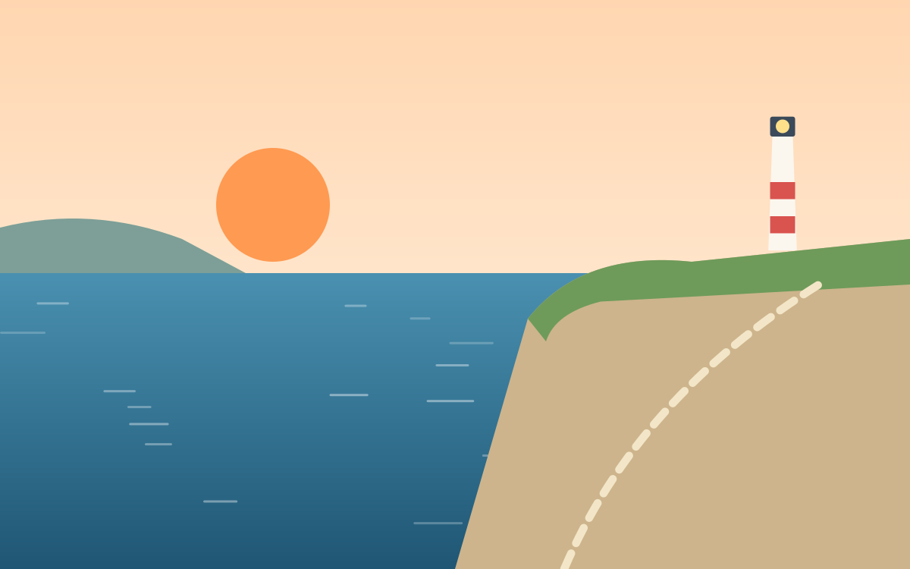
The cliff path from the old harbour
Nine kilometres from the harbour wall to the lighthouse, with one steep climb.
Suggested shelftravel
Try it with four made-up links. New links wait on Home like this, one at a time.

The cliff path from the old harbour
Nine kilometres from the harbour wall to the lighthouse, with one steep climb.
← Archive · ↓ Later · → Keep · Z undoes
Nothing new to sort. Links you save from Telegram, your browser or by hand wait here, one at a time.
Saved for a reason. Found when it matters.
A free, open-source bookmark manager for Windows, for anyone who saves links “for later” in more than one place and then can’t find them. Pages are copied as they come in, so a link still opens after the site is gone. There’s no account and no cloud.
Download for WindowsFree for Windows 10 and 11, about 16 MB. Release notes and checksum
A 60-second film of the app at work, with music. It loads from GitHub when you press play. The screens show made-up links.
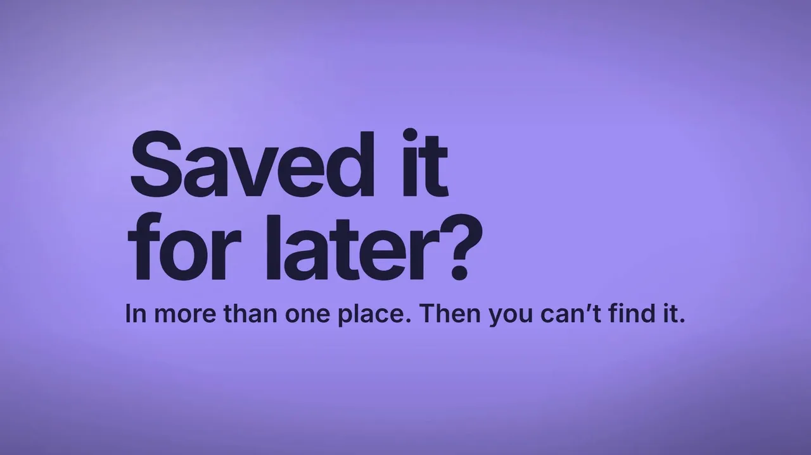
The film didn’t load here. Watch it at the top of the README on GitHub.
Pages bring their own picture. Posts that come without one are drawn in their site’s colours, so a shelf reads at a glance. In the app, point at a link and its details rise: the site, status, shelf and quick actions.
Made-up links. Sites are named in plain text; no logos are drawn.
Where your links come from, what you do with them, and how you get them back.
Import browser bookmarks from Chrome, Edge, Brave or Firefox, Telegram Saved Messages, WhatsApp chats, and your read-it-later list from a Pocket or Instapaper export. Then save as you go, with the browser extension, the bookmark button on your bookmarks bar, or any link you paste.
New links wait one at a time for Keep, Later or Archive, with a click or an arrow key. Up next and follow-ups due sit beside them, and each shelf with links is a row of pictures below.
Got a pile? Group any shelf by website and move a whole site at once, with Undo, or let optional AI with free keys suggest shelves, tags, clean titles and one-line summaries.
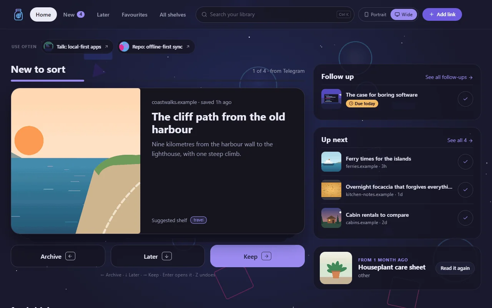
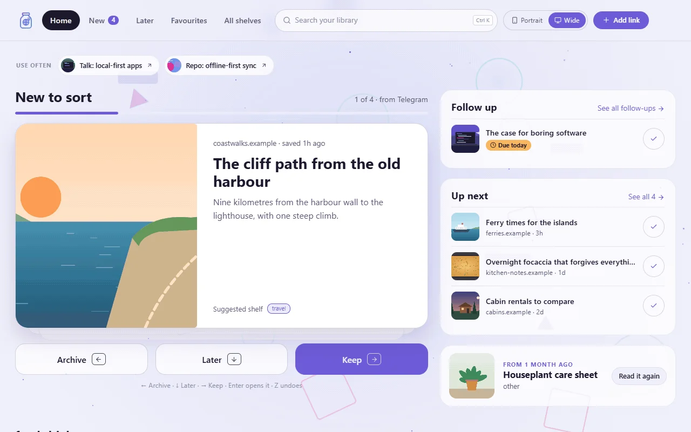
Search reads or, -word, “phrases”, groups and dates like site:,
#tag, creator: and saved:30d, and says under the box what it read.
Save a search as a smart shelf, give a link a day to come back to, and keep the ones you open every day in a quick row on Home.
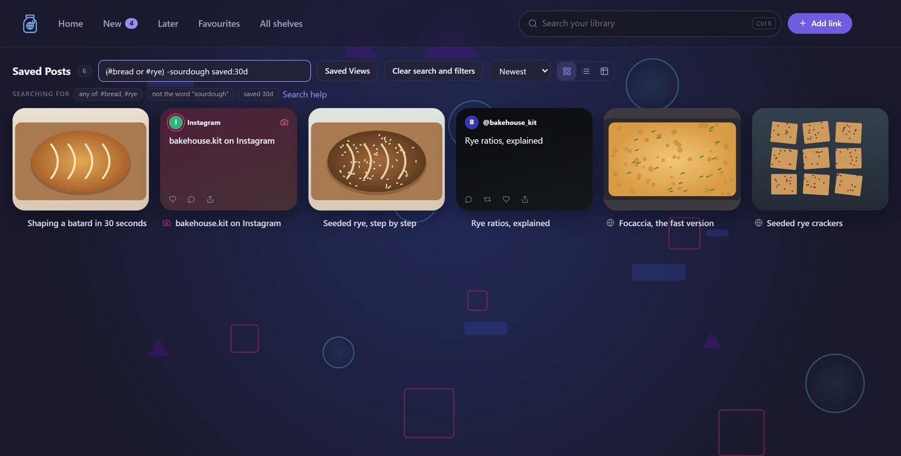
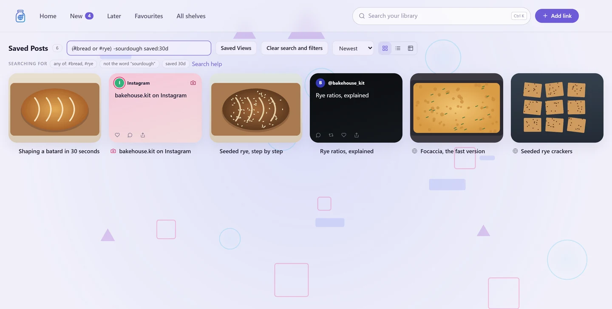
A quarter of all web pages that existed at some point between 2013 and 2023 were gone by October 2023, according to the Pew Research Center.
SuperBookmarks keeps its own copy of each page you save, and of public X, TikTok and Reddit posts, so a link still opens after the site changes or disappears. Copies open in a reader inside the app, as saved or as text only, and scripts never run in them.
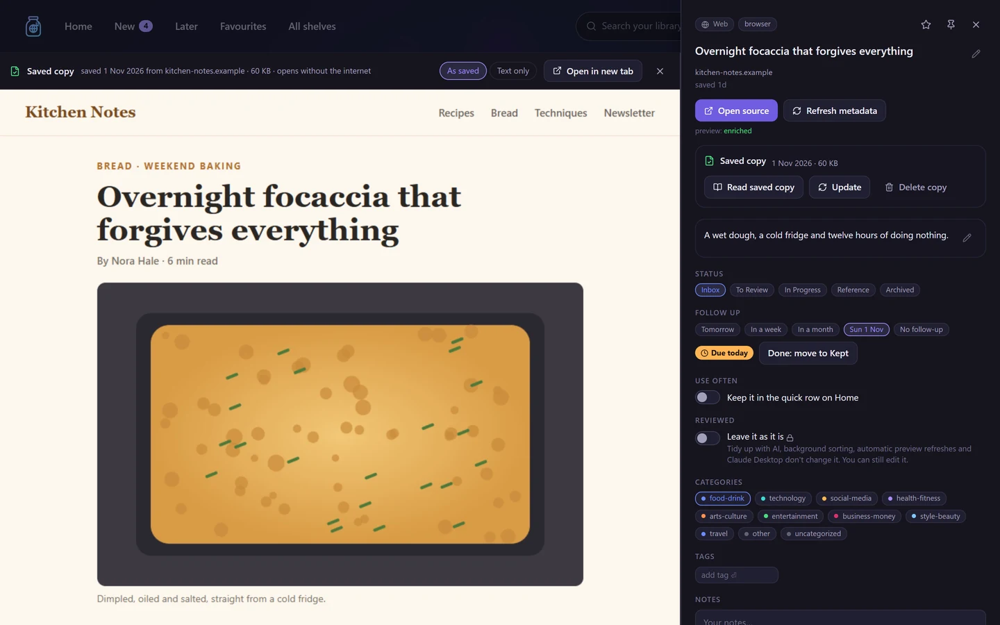
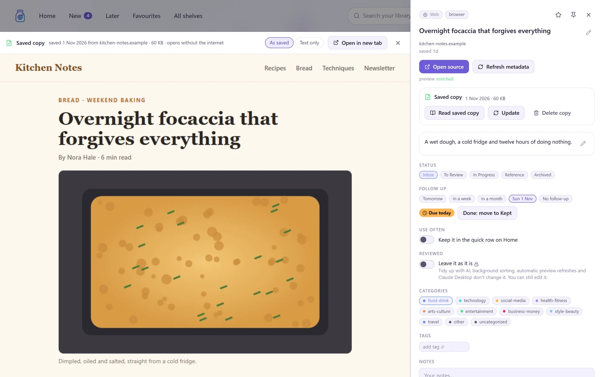
A browser extension that saves the posts you see, Claude Desktop with no API key, creators, a search that says what it read, and History, which undoes bulk changes. Shown with made-up links. Release notes
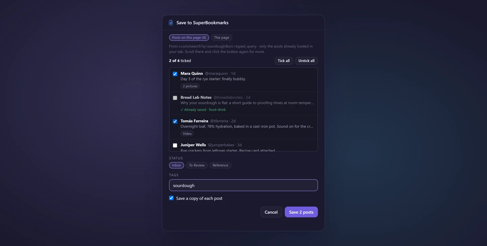
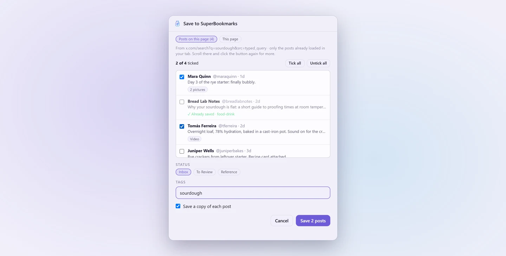
On X, Instagram and TikTok the extension lists the posts already loaded in your tab and saves the ones you tick. It never scrolls, opens posts or keeps a login, and it needs no permission for those sites.
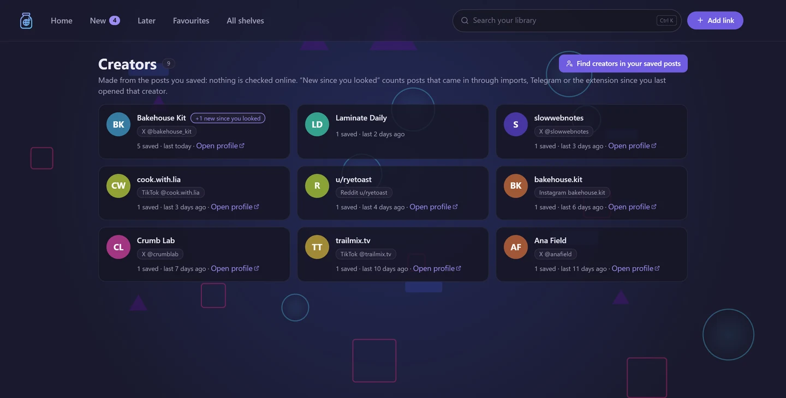
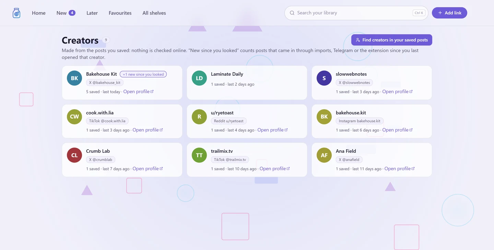
Creators are worked out from the posts themselves: names and handles across sites, merge two that are the same person, and see what’s new since you looked.
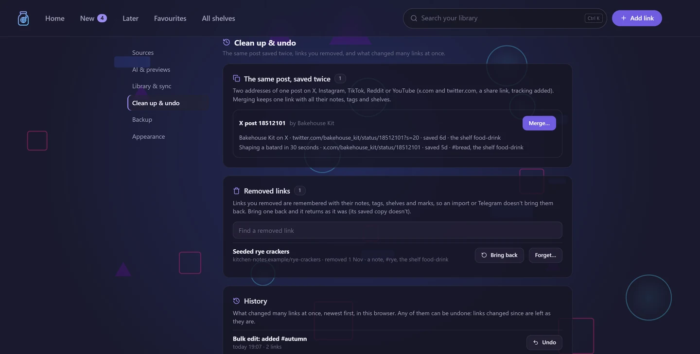
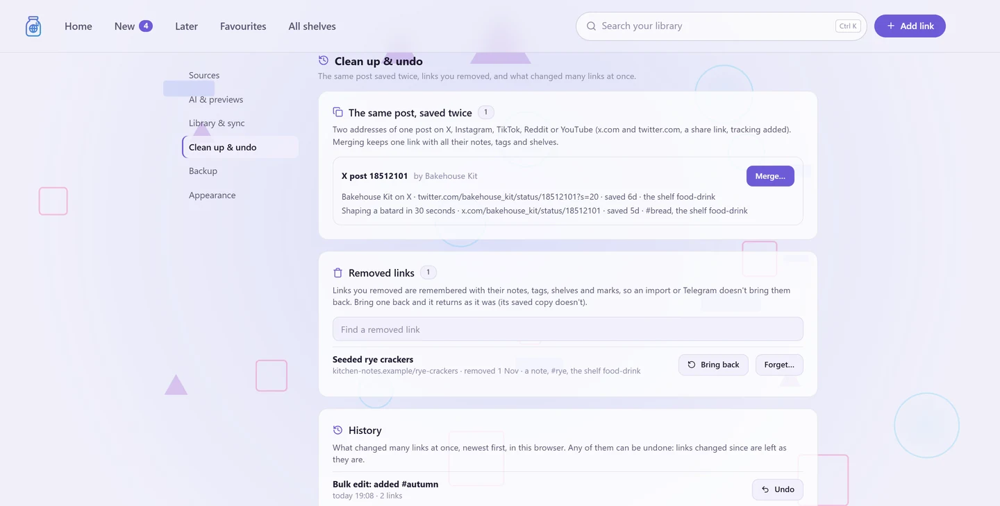
Links of one post saved at two addresses are listed for you to merge, links you remove are remembered so you can bring one back, and History undoes bulk edits, merges, removals, imports and AI runs, not only the last.
Search and tidy your library from a Claude chat with the SuperBookmarks extension for Claude Desktop, under your own Claude plan, with Undo for what it changes.
SuperBookmarks is for one person on one PC, with no account or cloud service behind it, and that is the point.
There’s no SuperBookmarks server for anything to go to.
There’s nothing to sign up for. Your library is one SQLite file in your user folder, with export and restore backups.
The app listens only on 127.0.0.1. It fetches previews and saved copies from the sites you
saved; Network activity says what it contacts and when.
There’s no analytics and no crash reporting, and the app never checks for a new version of itself.
The app reads only files you select and never scans live browser profiles. The extension reads a page when you press its button or menu item, unless you switch on its optional Download buttons.
Saved copies are inert: scripts never run in them.
Without a key the app never contacts an AI provider, and built-in keyword rules sort what you import.
Used on Windows 11. It isn’t blocked on Windows 10, but it hasn’t been tested there.
SuperBookmarkManager-Setup.exe and its checksum are on the
release page.127.0.0.1:5001, or on another
free port if that one is taken, and runs quietly in the background.The installer is unsigned, so Windows SmartScreen or your antivirus may warn you. If SmartScreen shows “Windows protected your PC”, choose More info, then Run anyway. Check the file’s SHA-256 against the published checksum before running it:
Get-FileHash .\SuperBookmarkManager-Setup.exe -Algorithm SHA256Help make browser-b0X better.
Ko-fi and Buy Me a Coffee are both on that page.
Support on Bio SitesEvery contribution is appreciated, but never expected. Using the project, reporting bugs, and sharing it with others helps too.